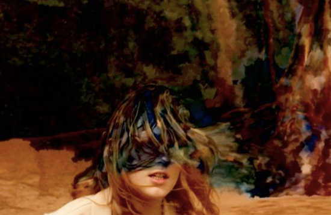

Previous Calendars:
All /
All 2015 /
Spring 2014 /
Spring 2013 /
Fall 2012 /
Spring 2012 /
Fall 2011
Spring/Summer 2014
Sun. 3/2: Skip the Oscars with your host, Barbara Barbeau, who is better than Ellen DeGeneres
Sunday March 2nd 7pm at RSVP Only
Skip the Oscars with Contraband Cinema and your host, Barbara Barbeau, who is better than Ellen DeGeneres! This year we'll be indulging ourselves with a variety of cinema treasures and performances presented by friends of Contraband. We will also be taking to opportunity to share announce or plans for this coming Spring. Light food and beverages will be served along with a good helping of Hollywood Roast. The event is limited seating and parking and therefore an RSVP is required. To reserve your spot please fill in the following form linked below. We will send and email with details of the event.
More Details
Sun. 3/22: Broken Beauty: A Show On Glitch!
Saturday March 22nd 8pm at Beep Beep Gallery

$7 at the door
Punks of the video world, glitch artists, use a wide array of new and old technologies to rebel against the hyper-slick and glossy world of contemporary media. Using their VCR's binary code, circuit boards, gaming consoles and video mixers, they strive to find the soul of the machine while showing viewers that broken is beautiful!
Contraband Cinema will be presenting works by Tachyons +, Great Nordic Sword Fights, Big Pauper and local artists Michael Betancourt, Adam Bruneau, Anna Spence and Chris Chambers will be in attendance!
More Details
Sat. 5/31: TWILLERAMA

$5 at the door
Trespassing on a city dump, Animated duo Jeff Twiller and Randy J. Johnson host and curate a selection of animated short films (and one live action film) culminating in the first ever TWILLERAMA. Jeff Twiller has an online presence known for his insightful film reviews and failed attempts at Parkour. His knowledge of the history of animation is seen below in this special event he hosted at the Ottawa International Animation Festival:
More Details
Fri. 6/13: Women with Knives - handcrafted film tour

$5 suggested donation. Friday June 13th 8pm at MINT Gallery
Experimental animators Kelly Gallagher, Lauren Cook, and Charlotte Taylor take to the road with their handcrafted films, bringing their award winning works across the east coast summer 2014. The lineup features short experimental animation on 16mm & video, and includes no less that TWO films in 3D!!! Yay for film!!!
More Details
Fri. & Sat. 7/11-12: The Visitor Art Show & Film Screening

Contraband Cinema is proud to present a two-night event devoted to the film Mondo Digital calls “the Mount Everest of insane ‘70s Italian movies” - The Visitor. Filmed in Atlanta in 1979, this overlooked cult classic serves as a time capsule of our beloved city by capturing iconic mainstays such as the Omni Hotel, 11 Alive and CNN Center.
On Friday, July 11th, Contraband Cinema in conjunction with Eyedrum will host a one-of-a-kind art exhibition that will feature new and original pieces based on this unique film by a variety of local artists.
The following evening, Saturday, July 12th, will be a screening of The Visitor with special guest, actress Paige Conner, who starred as the evil Katy Collins, a performance that has to be seen to be believed!
More Details
Sat. 7/26: La Florida: Personal Histories of the Sunshine State

Like the waves that continuously etch out the shape of Florida, the personal histories of its inhabitants etch out its identity. Since Juan Ponce de Leon stepped into its marsh in 1513 Florida has been a concept up for grabs. The documentary films in this program tell stories of people who by choice, force or coercion have made a claim to the idea and place the Spanish called La Florida.
Award winning films by Georg Koszulinski (in person), Lisa Danker and Carl Knickerbocker begin at 8pm. Q&A following the films.
Come early for Robbins Barstow Florida vacation home movies (1973).
$5 suggested donation. Saturday July 26th at Beep Beep Gallery. Doors open at 7pm
More details...
Fri 8/15: Zbigniew Rybcznski's "Media"

Come for a collection of experimental short films by Zbigniew Rybczynski, hot dogs, popcorn, beverages, and Contraband contraband!
$5 suggested donation.
Ambient + Studio, Friday August 15th 7pm
Pre-show at 7pm.
Feature presentation at 8pm.
Zbigniew Rybczynski is a Polish cinematographer, experimental filmmaker and inventor. Having received multiple awards, including MTV video awards and the first Emmy for an HD production, Rybczynski was also the first Polish filmmaker to receive an Oscar for his film "Tango". Aside from being a pioneer in the HD format, Rybczynski holds several patents for Chroma key software and motion control technology. His innovative short films of the 70's and his creative music videos of the 80's laid the groundwork for directors such as Darren Aronfsky, Gaspar Noé, Michel Gondry and many others. Rybczynski's work represents a rare and crucial link in the history of experimental filmmaking.
More details